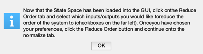
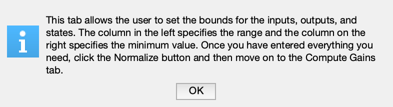
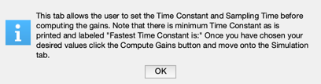
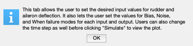

Simulate a detection filter using the DetectionFilterBuilder GUI.
Shows how to interactively create and then simulate a detection filter as well as shows the format required for the input State space .mat file
------------------------------------------------------------------------ See also ReduceOrderPlugIn, NormalizePlugIn, ComputeGainsPlugIn, SimulatePlugIn, and DetectionFilterBuilder ------------------------------------------------------------------------
Contents
%-------------------------------------------------------------------------- % Copyright (c) 2010 Princeton Satellite Systems, Inc. % All rights reserved. %-------------------------------------------------------------------------- % Since version 10. %-------------------------------------------------------------------------- global PSS_NO_INTERACTIVE_DEMOS; if PSS_NO_INTERACTIVE_DEMOS tPause = [1 1]; else tPause = [15 25]; end
Set up statespace .mat file
%----------------------------- a = ... % State transition matrix [-20.0000 0 0 0 0 0 0 0 -25.0000 0 0 0 0 0 0 0 0 0 1.0000 0 0 -0.7440 -0.0320 0 -0.1540 -0.0042 1.5400 0 0.3370 -1.1200 0 0.2490 -1.0000 -5.2000 0 0.0200 0 0.0386 -0.9960 -0.0003 -0.1170 0 0 0 0 0.5000 0 0 -0.5000]; b = ... % State input matrix [20 0 0 25 0 0 0 0 0 0 0 0 0 0]; c = ... % State output matrix [0 0 0 1 0 0 -1 0 0 0 0 1 0 0 0 0 0 0 0 1 0 0 0 1 0 0 0 0]; d = ... % State feedthrough matrix [0 0 0 0 0 0 0 0]; name = 'L1011'; % Name of the system states = ... % State names {'rudder deflection (rad)' 'aileron deflection (rad)' 'bank angle (rad)' 'yaw rate (rad/s)' 'roll rate (rad/s)' 'sideslip angle (rad)' 'washout filter state'}; inputs = ... % Input names {'rudder deflection (rad)' 'aileron deflection (rad)'}; outputs = ... % Outputs {'washed out yaw rate (rad/s)' 'roll rate (rad/s)' 'sideslip angle (rad)' 'bank angle (rad)'}; sType = 's'; % 's', 'z', or 'delta' dT = 0; % Time step g = statespace( a, b, c, d, name, states, inputs, outputs, sType, dT ); % ***NOTE*** Its important that the statespace object variable is labeled g save('FDIRTest.mat','g'); % delete('FDIRTest.mat');
Initialize the DetectionFilterBuilder GUI
DetectionFilterBuilder;

Load the newly created statespace .mat file
To do this click on the button labeled "Select State Space .mat File" and navigate to and select the .mat file
helpdlg(['click on the button labeled "Select State Space .mat File" and '... 'select your statespace file. A test file has already been created '... 'titled "FDIRTest.mat" and is located in Math/FDIR/']); pause(tPause(1))
Reduce Order Tab
Now that the State Space has been loaded into the GUI, click on the Reduce Order tab and select which inputs/outputs you would like to reduce the order of the system to (checkboxes on the far left). Once you have chosen your preferences, click the Reduce Order button and continue onto the normalize tab.
helpdlg(['Now that the State Space has been loaded into the GUI, click on'... 'the Reduce Order tab and select which inputs/outputs you would like to'... 'reduce the order of the system to (checkboxes on the far left). Once'... 'you have chosen your preferences, click the Reduce Order button and '... 'continue onto the normalize tab.']); pause(tPause(2))
Normalize Tab
This tab allows the user to set the bounds for the inputs, outputs, and states. The column in the left specifies the range and the column on the right specifies the minimum value. Once you have entered everything you need, click the Normalize button and then move on to the Compute Gains tab.
helpdlg(['This tab allows the user to set the bounds for the inputs, '... 'outputs, and states. The column in the left specifies the range '... 'and the column on the right specifies the minimum value. Once you '... 'have entered everything you need, click the Normalize button and '... 'then move on to the Compute Gains tab.']); pause(tPause(2))
Compute Gains Tab
This tab allows the user to set the Time Constant and Sampling Time before computing the gains. Note that there is minimum Time Constant as is printed and labeled "Fastest Time Constant is:" Once you have chosen your desired values click the Compute Gains button and move onto the Simulation tab.
helpdlg(['This tab allows the user to set the Time Constant and Sampling '... 'Time before computing the gains. Note that there is minimum Time '... 'Constant as is printed and labeled "Fastest Time Constant is:" Once '... 'you have chosen your desired values click the Compute Gains button '... 'and move onto the Simulation tab.']); pause(tPause(1))
Simulate Tab
This tab allows the user to set the desired input values for rudder and aileron deflection. It also lets the user set the values for Bias, Noise, and When failure modes for each input and output. Users can also change the time step as well before clicking "Simulate" to view the plot.
helpdlg(['This tab allows the user to set the desired input values for '... 'rudder and aileron deflection. It also lets the user set the values '... 'for Bias, Noise, and When failure modes for each input and output. '... 'Users can also change the time step as well before clicking '... '"Simulate" to view the plot.']); % PSS internal file version information %-------------------------------------- % $Id: e9bd29f73782792597281c77c82aa1dc115f5338 $